Understand why you keep getting it wrong.
Write the problem out by hand and work it the way you normally would. When you get stuck, ask for exactly as much help as you want, and Klera writes the next bit in front of you, on your page, in pen.
How it works
Three things, every session.
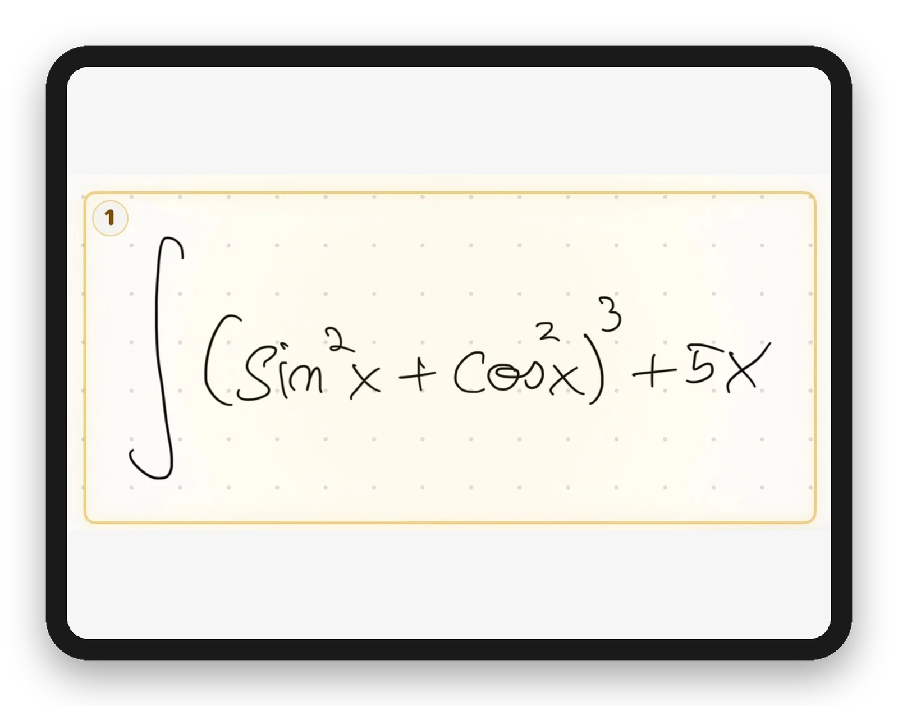
1 You write with Apple Pencil
Work the problem the way you normally would. No typing, no photos.
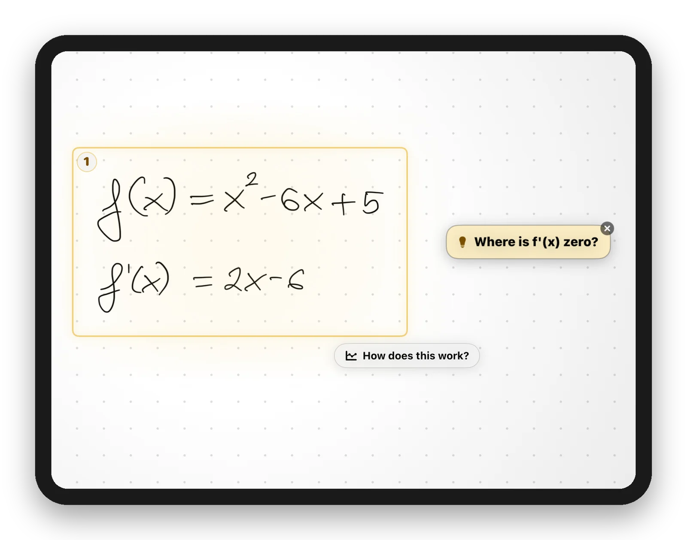
2 Klera sees where you get stuck
It reads your working as you go, line by line.
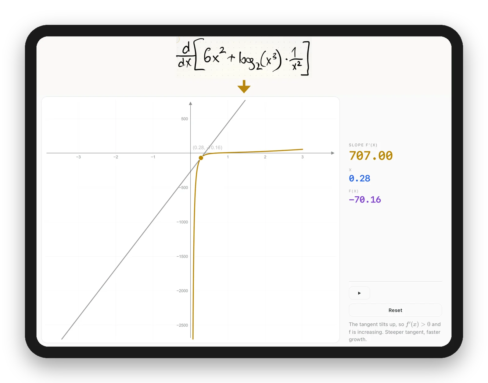
3 It hints, asks, or stays silent
Sometimes a nudge, sometimes a question, sometimes a live graph. Sometimes nothing.
Not another chatbot
Answers are free. Understanding isn't.
You never retype anything
No photographing your notes, no typing an integral on a keyboard with no integral key. You write the maths. That is the input.
The answer lands on your page
Klera writes its working in handwriting, under yours, at the right size, in the right place. One page, not a conversation in another window.
It notices before you say anything
The pause before your first stroke, whether you tried before asking, where your working first went wrong. Measured against your own normal, never shown to you as a score.
Ask for exactly what you need
Five levels of help. You choose how far to go.
Hint
A nudge toward the idea you are missing. Ask again and it gets more specific rather than repeating itself.
Next step
One line, the single move that comes next from where you are. Then it stops and waits for you.
Explain
The why, spoken and on the board. Why this method, why this substitution.
Find my mistake
It reads your working and points at the line where it went wrong.
Solve
The whole thing, step by step, at a pace you can follow. A wrong path gets cleared first, so the page ends up correct.
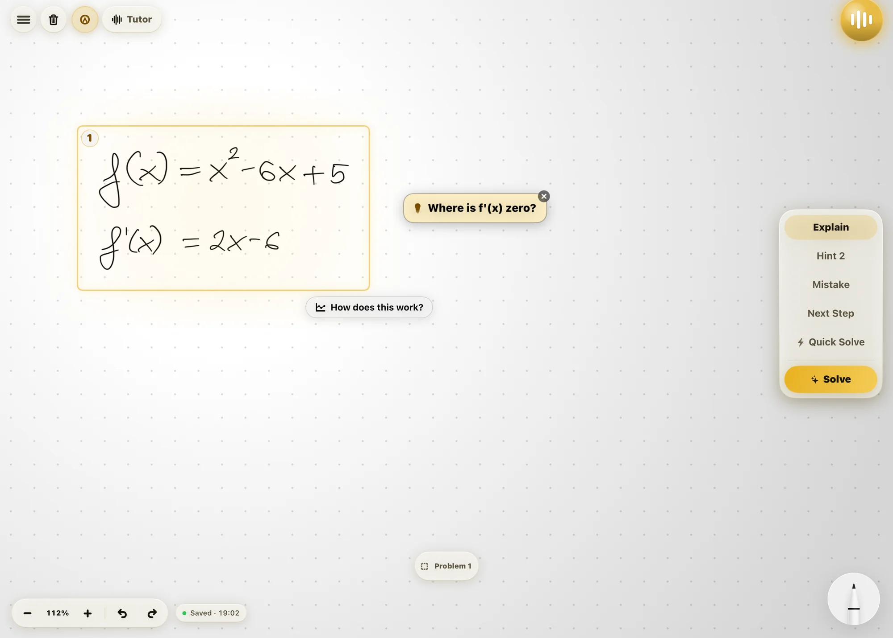
Sometimes it makes you do it
The part that makes Klera feel like a person, not an answer machine.
When Klera can tell you are capable of the next line, it does not write it. It writes one step, explains it, says your turn, and waits.
There is no button. You write the next line and it watches. Right, and it moves on. Wrong, and it tells you something useful without giving the answer away. Properly stuck, and it writes the step itself rather than leaving you staring at a blank page.
Say “just solve it” at any point and it will, from exactly where you got to.
It won't congratulate you for nothing
It keeps track of how much you actually did. Praise you did not earn is worthless, and it makes the praise you did earn worthless too.
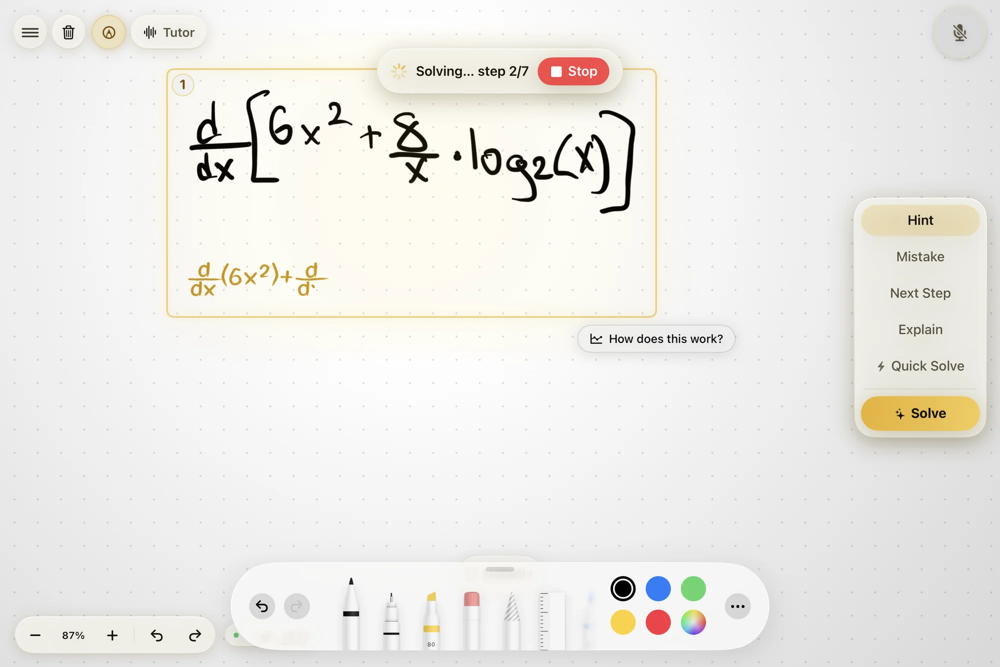
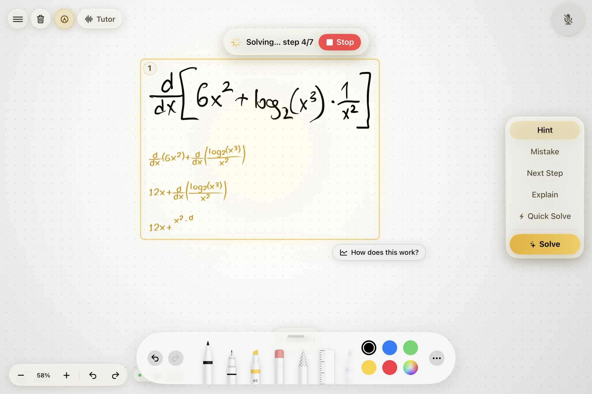
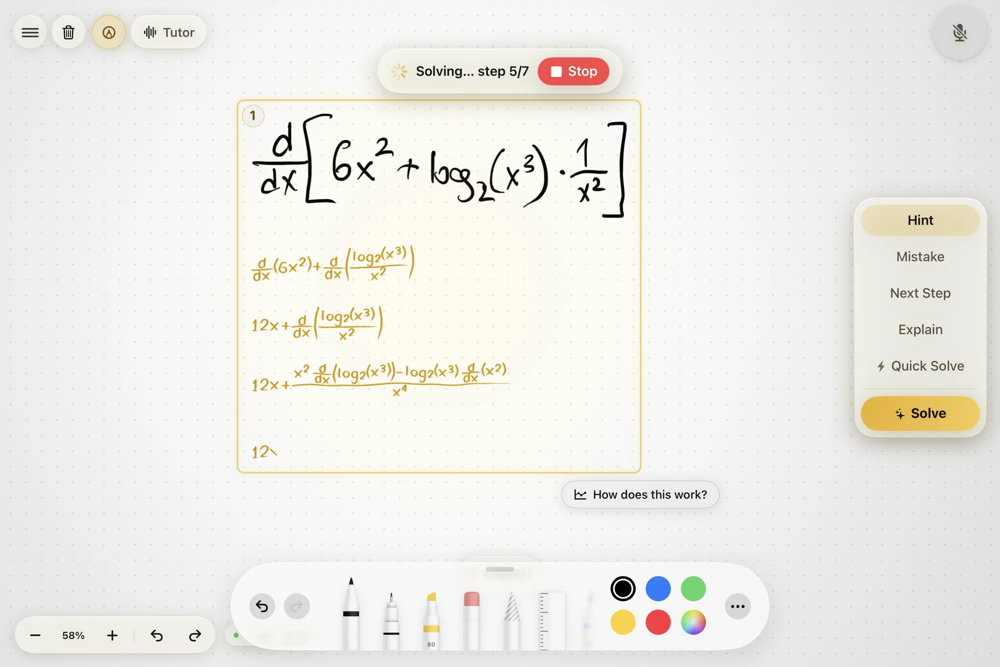
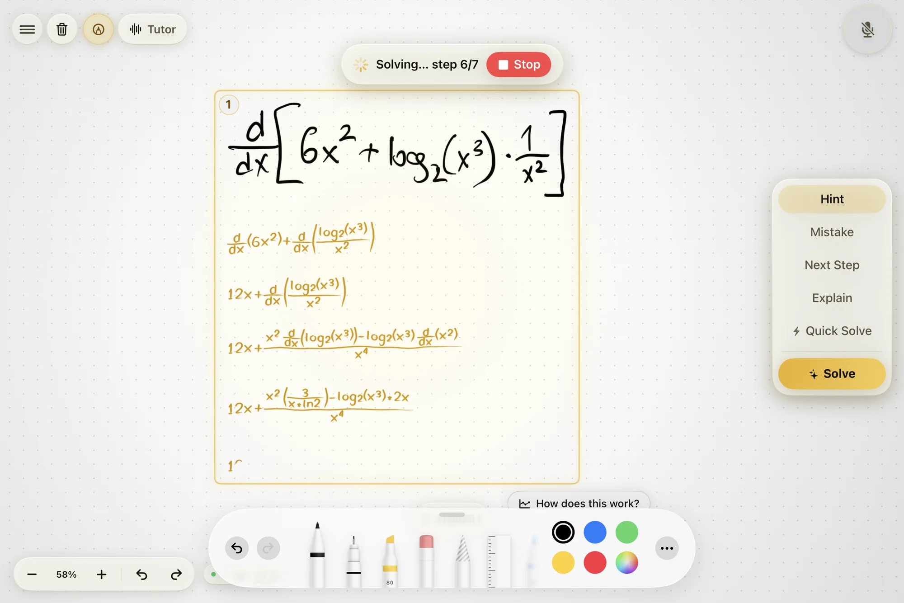
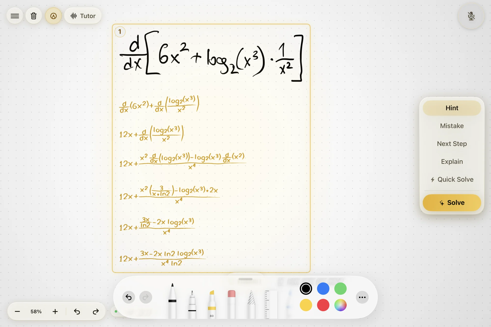
It notices things you never told it
Klera reads how the work is going the whole time, not just when you ask.
Bored is not stuck
Everything right, fast, on problems that are too easy? Klera makes the next one harder instead of explaining what you already know.
Struggling well is good
Rubbing something out and fixing it yourself is the best thing that can happen in a session, and it gets left alone.
It marks work you never asked about
Finish something and move on, and it quietly checks whether it was right. Nothing pops up. The next problem is just better aimed.
It knows if you tried first
Solving after one small hint and asking for the whole answer straight away count very differently.
It learns your normal
Some people press harder when they are stuck. Some go completely still before the pen touches the page. It learns which one you are.
You never see a score
No percentage, no streak, no progress bar. They make people work for the number instead of the maths.
Pictures you can pull apart
When a diagram would help, you get a live one.
Klera decides on its own when a diagram is worth drawing, builds it from your actual problem, and puts it on the board beside your working. Drag a slider and everything recomputes, so you watch the idea move instead of being told about it.
If it cannot build something honest for your problem, it says so. It will never invent a graph with made-up numbers.
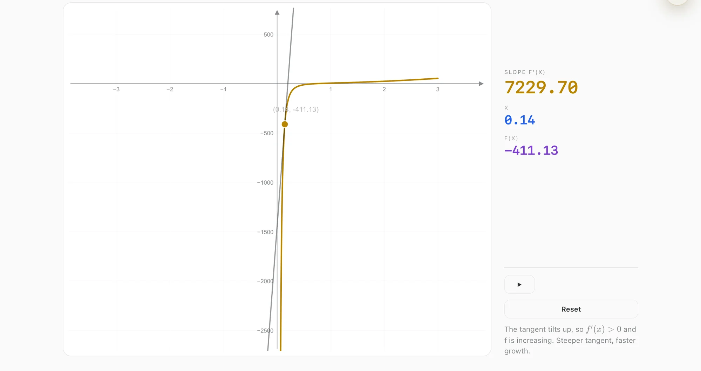
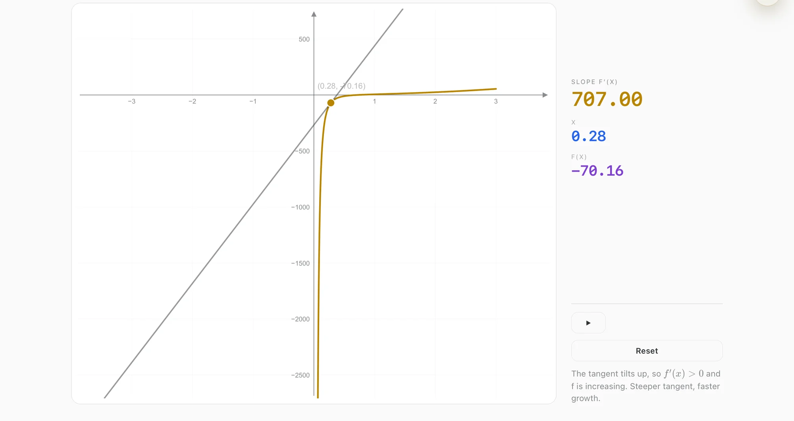
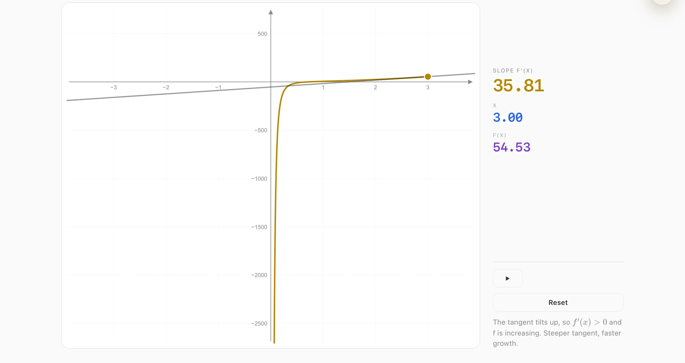
Sit a real past paper
Built for handwritten STEM exams.
Give Klera a past paper as a PDF. It pulls out the questions and the mark scheme and lays the paper out on the canvas, so you sit it properly, by hand, under time.
Then it marks every answer in red pen, right on your own handwriting, teaches the corrections instead of just listing them, and brings the questions you lost marks on back later.
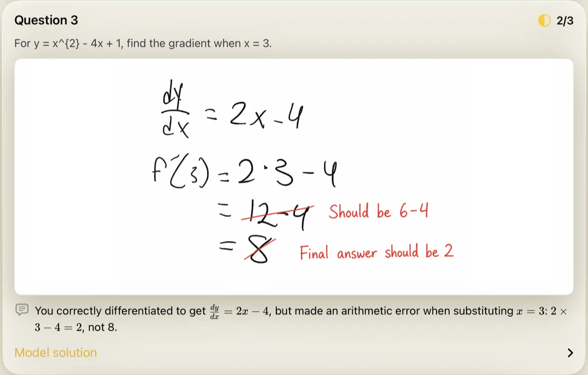
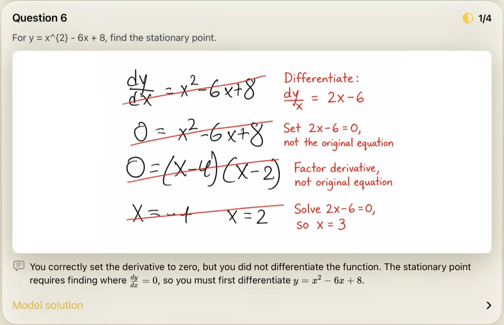
Marked by Klera after submitting. Black is the student, red is Klera.
What you need
Get on the early-access list
The first builds go out on TestFlight to a small group who will use Klera on real coursework and tell us what is broken. Everyone on this list who tests the app keeps Klera Premium free for a year, whatever we charge for it later. No card, no trial that quietly turns into a subscription.